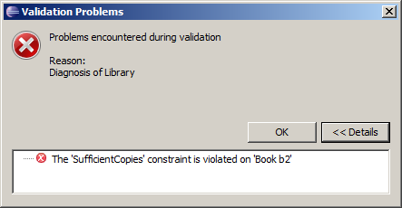
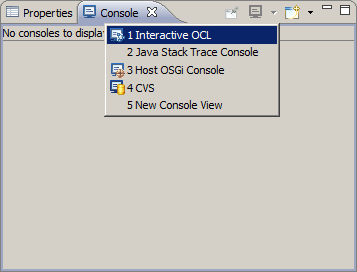

This tutorial was written for Eclipse Helios; Eclipse 3.6, EMF 2.6, OCL 3.0.
In this example you will
You may then
This tutorial assumes that the reader is familiar with generating models using EMF. The reader is referred to Generating an EMF Model.
To see the complete source code for the examples shown in this tutorial, install the OCL Interpreter Example plug-in into your workspace.
Other references:
The OCLinEcore editor is not part of the core OCL functionality included in the Modeling Package. ...
There are many different (comaptible) ways to create and edit Ecore models.
All the above approaches update an Ecore file, so the user is free to choose whichever editing approach is best suited for the planned changes.
We will first create a new project for this example; so invoke File->New->Project... (left-click the File menu, then left-click New, then left-click Project...).
In the New Project dialog left-click to expand Eclipse Modeling Framework, then left-click to select Empty EMF Project and finally left-click on Finish.
In the New Empty EMF Project dialog type Tutorial as the project name and left-click on Finish.
We will now create a new model for this example; so right-click on the model folder in the Tutorial project to define the target folder and pop-up the context-sensitive menu and select New->Other....
In the New dialog left-click to expand Eclipse Modeling Framework, then left-click to select Ecore Model and finally left-click on Next.
In the New Ecore Model dialog type Tutorial.ecore as the file name and left-click on Finish.
The Sample Ecore editor for Tutorial.ecore showing a tree view of a single unnamed EPackage.
Close the editor by left-clicking the cross on the editor tab.
We will now open the Ecore model using the OCLinEcore text editor and provide some initial content.
Right-click on the Tutorial.ecore file to pop-up the context-sensitive menu and select Open With->OCLinEcore (Ecore) Editor.
The first time you open a file in the project with one of the Xtext-based editors, you will be asked Do you want the Xtext nature to be added to this project. Click Yes to avoid answering the question in the future.
An almost empty text file appears showing the package keyword and an empty name.
Now type (or cut and paste) the following text into the editor.
import ecore : 'http://www.eclipse.org/emf/2002/Ecore#/';
package tutorial : tut = 'http://www.eclipse.org/mdt/ocl/oclinecore/tutorial'
{
class Library
{
attribute name : String;
property books#_'library' : Book[*] { composes };
property loans : Loan[*] { composes };
property members#_'library' : Member[*] { composes };
}
class Book
{
attribute name : String;
attribute copies : Integer;
property _'library'#books : Library;
}
class Member
{
attribute name : String;
property _'library'#members : Library;
}
class Loan
{
property book : Book;
property member : Member;
attribute date : ecore::EDate;
}
}
The syntax is fairly self explanatory, emulating OMG specifications with 'name : type[multiplicity] { properties }'.
Completion assist (Ctrl Space) may be used for syntax assistance. Alternatively, the Sample Ecore Editor may be used to create a construct directly in Ecore, which can then be opened in the OCLinEcore editor to see the corresponding textual syntax.
The example meta-model models a library with members and books and loans of books to members. It may be viewed graphically using the Ecore Tools (not part of this tutorial).
The OCL types String and Integer map to EString and EBigInteger in Ecore.
At this point a corresponding EMF tutorial would show how to generate Java code for and an editor the meta-model. Here we are concerned with modeling, so we will continue with the models alone.
In the outline right-click on Library to show the context-sensitive menu and then left-click on Create Dynamic Instance... to start to create a new Dynamic Model with Library at its root.
(If the Outline is not visible, it may be made visible by Window->Show View->Outline.)
(If Library is not visible in the Outline, left-click on OCLinEcore Document to expand it, then on tutorial to expand it.)
In the Create Dynamic Instance dialog select Tutorial/model as the parent folder for the Tutorial.xmi dynamic model instance and left-click Finish.

The model is automatically opened for editing using the Sample Reflective Ecore Editor, which gives a tree-like presentation of the model. The properties of each node can be seen in the Properties View.
(If the Properties View is not visible, right-click within the editor and left-click on Show Properties View.)
From the right-button menu Library use New Child->Books Book twice, use New Child->Loans Loan once and New Child->Members Member three times to populate the model with two books, one loan and three members.
Left-click to select each of the Books and Members in turn and enter a name such as b1 or m2 using the Properties View. Specify that b1 has one copy and that b2 has 2 copies.
The books and members now have distinct titles in the outline, so that when you left-click to select the Loan and edit its Book and Member attributes the associated pull-down has meaningful entries. Specify that the Loan is for b2 by m3.
The configuration so far is simple, three members, two books and one loan. We can validate that this by right-clicking on the Library node, and left-clicking Validate to validate Library and all its children.
Since the model is so simple, it is difficult to have anything wrong; most of the illegal modeling options such as a Loan composing rather than referencing a Book are prevented by the Editor's enforcement of the meta-model.
(If you have an error at this point, a Details button will lead you to some diagnostics that may clarify the problem.)
We will now create two further identical loans of b2 by m3. This may conveniently be performed by left-clicking to select the existing loan, typing Ctrl-C to copy it, left-clicking to select the library as a new parent, then typinf Ctrl-V to paste it on the library. Repeat so that there are three identocal loans.
Validating the library should still be successful, although it is clearly wrong for the two copies of b2 to participate in three loans.
The semantic constraint that a book cannot be borrowed more times than there are books is a simple example of a constraint that cannot be expressed by simple multiplicities; a more powerful capability is required that may potentially require evaluation of functions of almost arbitraty complexity. The Object Constraint Language provides this capability.
The constraint can be realized as an invariant on a book that specifies that that the size of the selection of loans involving the book is less than or equal to the number of copies of the book.
Close the Tutorial.xmi editor before modifying its meta-model. Beware that a wide variety of unpleasant errors can occur if the meta-model is changed after the model is loaded.
Add the invariant shown below to the meta-model.
class Book
{
invariant SufficientCopies:
library.loans->select(book=self)->size() <= copies;
attribute name : String;
attribute copies : Integer;
property library#books : Library;
}
This is expressed by the SufficientCopies invariant constraint for a Book. For a valid model the SufficientCopies invariant must always be true.
If you reopen the Tutorial.xmi editor and invoke Validate for the Library, you will now get a validation error.
The Details identifies that the SufficientCopies invariant is not satisfied for the b2 book.
If you now change one of the loans so that b1 is borrowed and then validate again, the problem is resolved. It is alright for m3 to borrow the one copy of b1 and the two copies of b2.
Before introducing a further constraint of no duplicate loans, we will show how OCL expressions can be exercised. OCL is a very powerful compact language; the example hides a loop over all the loans. More complex examples may easily involve three or four levels of hidden loopps on a single line, but may equally easily have simple errors. It is therefore helpful to simplify expressions and use helper operations and properties to modularise them. These may be exercised using the OCL Console.
The OCL Console supports interactive execution of an OCL expression in the context of a model instance.
To make the OCL Console visible, first make the Console view visible by Window->Show View->Console. Then right click on the Open Console and left click on Interactive OCL.
The Interactive OCL console comprises two main text panes. The upper pane displays results. The lower pane supports entry of queries.
Left-click to select the Library in the Tutorila.xmi as the context for a query, and then type books followed by a new line into the lower pane of the console.
The result of evaluating this query for the Library is shown.
Substantial OCL queries spanning many lines may be entered and so the cursor up and cursor down keys move across lines. If you want to access an earlier query, you may use the Page Up or Page Down keys to save typing them again.
You can examine the execution of the earlier query by selecting each of the books in turn and executing library.loans->select(book=self), to see that b1 has one Loan and b2 two.
(Practising queries in this way is particularly important with MDT/OCL 3.0.0 since validation of expression types is not performed in the editor. You may therefore enter erroneous OCL without warning from the editor and get an OclInvalid result from execution. Step-wise practice can resolve this. The next MDT/OCL release will have this missing validation.)
We will now introduce some help attributes and operations to make the OCL clearer and provide a richer meta-model API. Close the Tutorial.xmi editor and modify the meta-model to include the derived loans property and the helper operation isAvailable(). Simplify the invariant to use the derived property.
class Book
{
invariant SufficientCopies:
loans->size() <= copies;
attribute name : String[?];
attribute copies : Integer[?];
property loans : Loan[*] { derived,volatile }
{
derivation: library.loans->select(book=self);
}
property _'library'#books : Library[?];
operation isAvailable() : Boolean[?]
{
body: loans->size() < copies;
}
}
BUG. The derived property must also be volatile to avoid problems when a model is loaded but has no content.
The derived property is visible in the Properties view.
The helper operation can be evaluated in the Console view.
We will now further helpers and constraints to enforce an at most two loans per member policy.
(Don't forget to close tutorial.xmi while changing its meta-model.)
class Member
{
invariant AtMostTwoLoans:
loans->size() <= 2;
attribute name : String[?];
property _'library'#members : Library[?];
property loans : Loan[*] { derived,volatile }
{
derivation: library.loans->select(member=self);
}
property books : Book[*] { derived,volatile }
{
derivation: loans->collect(book);
}
}
The additional books property may be evaluated in the OCL Console to show which books each member has on loan.
BUG. The books property is not evaluated in the Properties view.
To illustrate how to work with the OCL API, we
Copyright (c) 2010 E.D.Willink and others. All Rights Reserved.